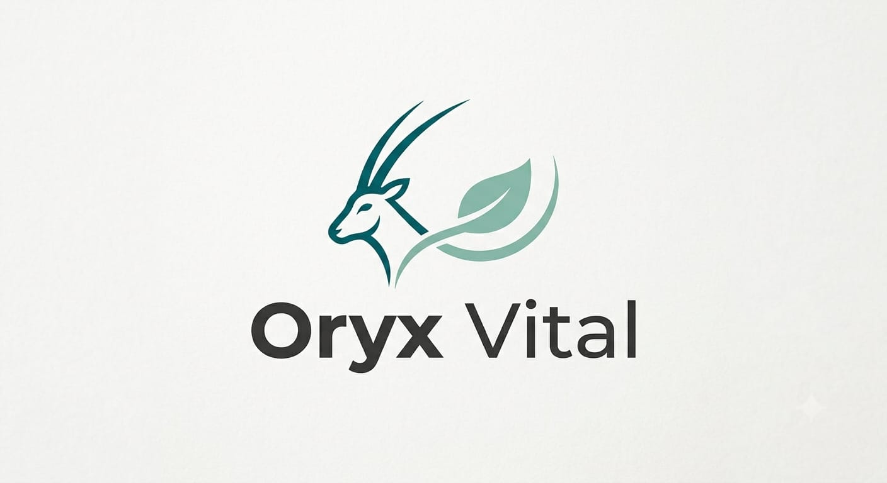

مرحباً بكم في Oryx Vision Lab
منصة Oryx Vision Lab هي البيئة الرقمية والمختبر التقني المتقدم التابع لمنظومة Oryx، والمخصص لأبحاث وهندسة الطب التجديدي والأجهزة الطبية الحيوية. نهدف هنا إلى كسر الحدود بين السطور البرمجية والخلايا الحيوية.
الجسر المعرفي
دمج البرمجة بالطب الحديث والأجهزة الذكية.
البحث العميق
دراسات أكاديمية في الخلايا الجذعية والمحاكاة السحابية الحيوية.
التقنية الحرة
مخططات هندسية وأطر مفاهيمية مفتوحة المصدر للابتكار.
قسم الأبحاث العلمية
الأبحاث الأكاديمية والسريرية لمنظومة Oryx Vision Lab
Oryx Regen
(iPSC-Based Regenerative Medicine)
إطار مفاهيمي متكامل يربط بين إعادة البرمجة الخلوية وهندسة الأنسجة الموجهة لتخليق خلايا وسلالات متخصصة.

Oryx Vital
(OXID Framework & Cloud)
إطار مفاهيمي لجهاز مراقبة الصحة الشخصية المتكامل مع نظام المحاكاة والتحليلات الحيوية السحابية Oryx Vital Cloud.
قسم المشاريع
المشاريع التقنية والابتكارات القادمة بمنظومة الطبية والبرمجية.
قريباً...
يتم العمل حالياً على تجهيز المشاريع لعرضها.
قسم المخططات
المخططات مفتوحة المصدر والتصاميم الهندسية المعمارية والتقنية.
قريباً...
يتم مراجعة المخططات الهندسية وتوثيقها لتصبح جاهزة للإتاحة.